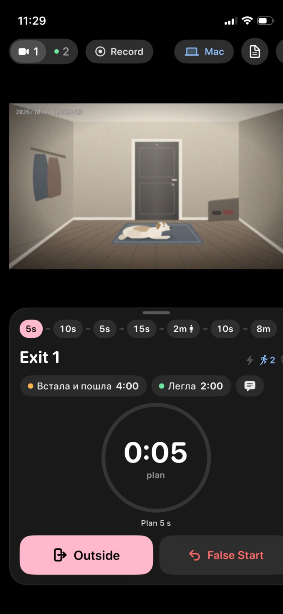
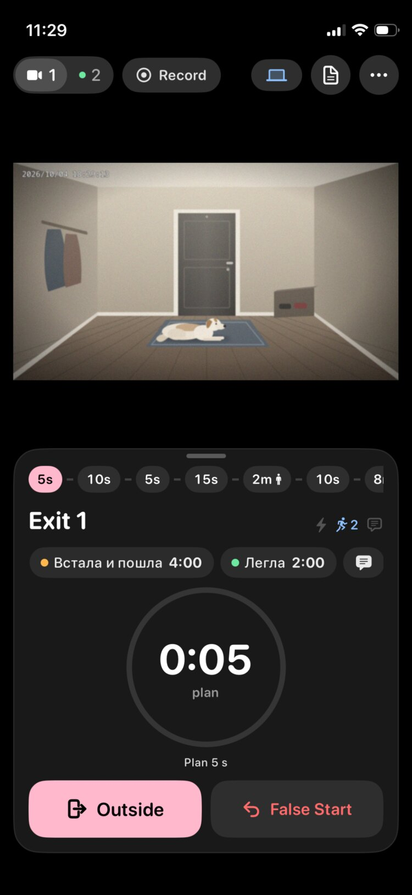
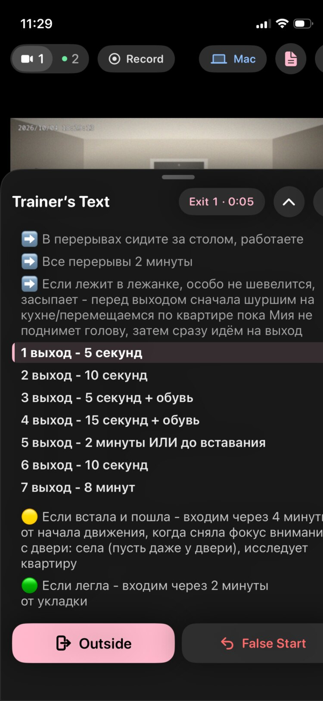
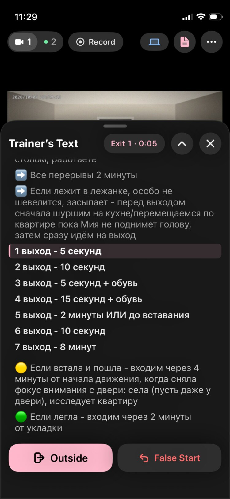
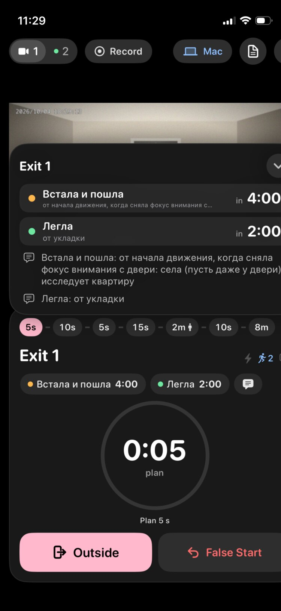
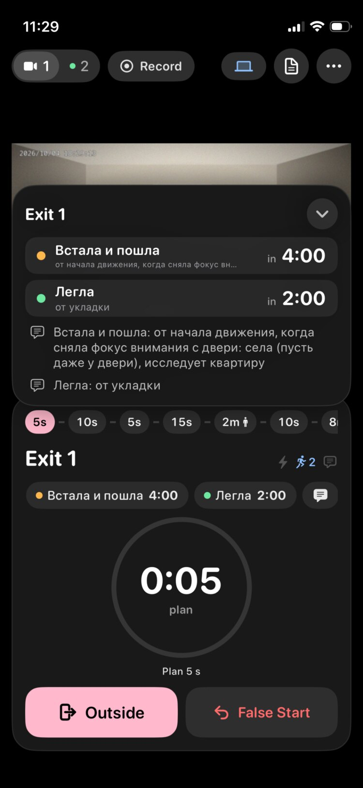
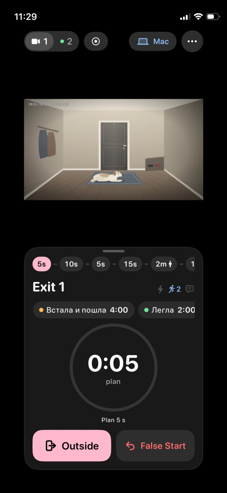
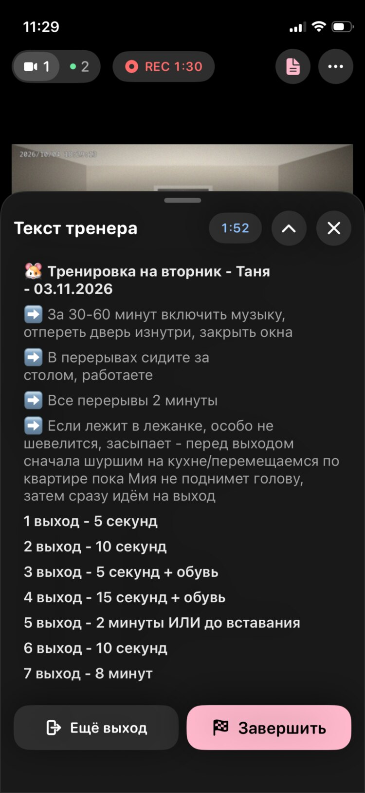
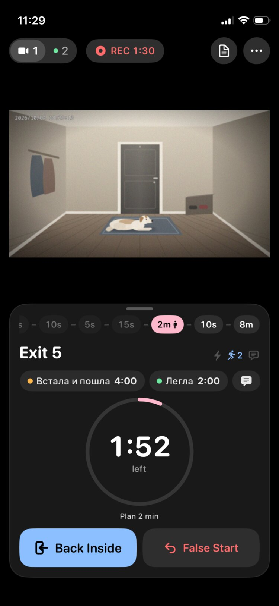

Три жалобы и что с ними
- Вёрстка уехала на экранах меньше 6.9″. Причина найдена и исправлена (раздел 0). Ниже — снимки «до/после» с симулятора iPhone 13 mini (375×812 pt, как на присланных скриншотах).
- Оверлей под шторками и всплывашками. Тап по нему закрывает шторку, а то, что под ним, не нажимается. Ниже четыре варианта, как он выглядит (раздел A). Все макеты собраны поверх настоящих снимков приложения. Тап по затемнению закрывает шторку, тап по телефону открывает её снова.
- Линия выходов: ⚡ для триггеров и понятный человечек. Сейчас человечек 🧍 стоит только у выходов «ИЛИ до вставания». ⚡ нет совсем, а в шапке карточки 🏃 значит «есть условия раннего входа». Ниже варианты правила и вида (раздел B).
Расписание в макетах — то, что на скриншотах (вторник 03.11): «обувь» у выходов 3 и 4, выход 5 «2 минуты ИЛИ до вставания», общие 🟡 «встала и пошла → через 4 минуты» и 🟢 «легла → через 2 минуты» после списка выходов. По умолчанию они действуют на все выходы.
0Вёрстка на маленьких iPhone — исправлено
Верхняя панель с камерами «1|2», «REC 23:22», «Mac», кнопкой текста и «•••» на 375 pt занимала около 420 pt. Экран — это колонка внутри GeometryReader, прижатая к левому краю. Поэтому вся колонка становилась шире телефона и обрезалась справа: камера, карточка, шторка, «Finish», «False Start». Теперь панель сворачивается по шагам и никогда не бывает шире экрана. На больших iPhone ничего не меняется, только зазоры между пилюлями стали 8 pt вместо 10.
Порядок сворачивания: сначала имена камер («Прихожая | Комната» → «1 | 2», так было и раньше). Потом «Mac» → значок ноутбука. Потом «REC 23:22» → «⏺ 23:22», а «Запись» → ⏺. На самых узких экранах (320 pt, Display Zoom) кнопка «Текст тренера» уходит в меню «•••». В шторке «Текст тренера» пилюля «Последний перерыв · 1:02» сворачивается до «1:02» в цвете фазы, а заголовок не обрезается.
- запись видна всегда: она сворачивается последней
- даже при очень крупном шрифте панель не толкает остальной экран
- на 375 pt с «Mac» и идущей записью: «1|2», «⏺ 23:22», ноутбук, текст, •••








Альтернатива: «Mac» уходит в «•••», а не в значок
Если значок ноутбука без подписи непонятен, на узких экранах его можно убрать совсем. Состояние связи тогда видно в заголовке меню «•••». Минус: со связью или без — на панели не видно.
- пропадает быстрый взгляд «связано ли с Mac»
- «Отключить синхронизацию» уезжает глубже
AОверлей под шторками и всплывашками
На iPhone их две, обе свои: «Текст тренера» (шторка снизу, 80 % экрана) и подробности выхода (выезжают над карточкой, если потянуть её или тапнуть ряд условий). Сейчас под ними ничего нет: «Back Inside» и «False Start» нажимаются сквозь открытые подробности. Во всех вариантах под шторкой появляется слой: тап по нему закрывает шторку и ничего под ним не нажимает. Свайп вниз и ⌄/✕ работают как раньше. Варианты отличаются только тем, как слой выглядит.
Референсы
- Material 3 · Bottom sheets — модальная шторка блокирует остальное приложение. Затемнение под ней (scrim, ~32 % чёрного) закрывает её по тапу. Немодальная (standard) живёт рядом с основным экраном без затемнения.
- Apple HIG · Sheets — на iOS лист бывает модальным и немодальным. Затемнённый фон говорит, что с ним нельзя работать, пока лист открыт.
- UIKit · largestUndimmedDetent и presentationBackgroundInteraction — Карты и Локатор не затемняют карту, пока лист низкий: главное содержимое остаётся видимым. Это прямой аналог нашей камеры.
- Меню и поповеры iOS (наши «•••», «Mac», меню камеры) — фон не затемняется, тап мимо закрывает меню и никуда не проходит. Это вариант A3.
- YouTube на iPhone — комментарии и описание открываются панелью под видео. Само видео не затемняется и продолжает играть: оно главное на экране. Это вариант A4.
Затемнение 40 % — классика
Как модальные шторки Material и листы iOS: всё вне шторки темнеет, включая камеру.
- сразу понятно, что фон «выключен»
- собака на камере темнее как раз тогда, когда читаешь условия выхода
Лёгкая вуаль 18 %
Тот же слой, но едва заметный: камера почти не темнеет, а кнопки визуально «отходят».
- камера читается
- на тёмном интерфейсе вуаль почти не видна — непонятно, почему «Back Inside» не нажимается с первого раза
Невидимый слой, как у меню iOS
Ничего не темнеет. Тап мимо шторки просто закрывает её. На макете слой показан розовой штриховкой, в приложении её нет.
- камера и экран выглядят как есть
- нет подсказки, что кнопки сейчас не работают: первый тап по «Back Inside» «проглатывается»
Кнопки под вуалью, камера светлая
рекомендуюСлой закрывает весь экран (тап в любом месте вне шторки закрывает её), но темнеет только там, где кнопки: верхняя панель и карточка. Камера остаётся яркой — за ней и следят, пока читают текст тренера или условия.
- собаку видно как без шторки
- кнопки явно «выключены», первый тап по ним никого не удивит
- щипок-зум и кнопки в углу камеры тоже ждут, пока шторку закроют
Не получат слоя: всплывающее уведомление под «Mac» («Синхронизировано…», «Нет связи…») — оно исчезает само и не мешает. Системные меню, листы и вопросы «Завершить тренировку?» уже ведут себя так, как нужно.
BЗначки в линии выходов
⚡ ставится у выходов с триггерами («+ обувь», «+ куртка»). С человечком два вопроса: когда его ставить и как показывать значки. Сначала правило (все варианты — в одном виде B·L1), потом вид (все — по рекомендованному правилу).
Референсы
- Шапка нашей же карточки: ⚡ 🏃 📝 у выхода. Значки в линии должны значить то же самое, теми же символами (сейчас в линии 🧍
figure.stand, а в шапке 🏃figure.run). - Список писем iOS Mail — флажок и скрепка прямо за текстом строки. Признаки встроены в строку, не добавляя высоты → L1.
- Material 3 · Badges — маленький бейдж в углу элемента для статуса → L2.
- Схемы линий метро (Яндекс Метро, транзит в Картах) — станции на линии, у особых станций под названием значки пересадок → L3.
- Интервальные тренировки (Apple Watch «Своя тренировка», Garmin) — ряд шагов разного типа. Тип шага виден по значку или цвету, сам шаг остаётся коротким.
Правило: у каких выходов человечек
Слева в каждой строке — начало тренировки (всё впереди), справа — идёт выход 5. Выходы 3–4 с «обувью» получают ⚡ во всех вариантах.
Сейчас
как в 1.5🧍 только у «ИЛИ до вставания», ⚡ нет.
- у 8 минут есть условия «встала → 4:00 / легла → 2:00», а значка нет
У каждого выхода с условиями — как в шапке
🏃, если у выхода есть хоть одно условие раннего входа. Общие условия по умолчанию действуют на все выходы, поэтому человечек у всех.
- буквально совпадает с 🏃 в шапке
- когда значок у всех, он ничего не выделяет
- «легла → через 2:00» у выхода на 5 секунд не сработает никогда
Только там, где можно войти раньше плана
рекомендую🏃 у выхода «ИЛИ до вставания», а ещё там, где время условия меньше плана выхода: за эти секунды условие успеет сработать. 5 с/10 с/15 с с «через 4:00» значка не получают, 8 минут получают, 2 минуты «ИЛИ до вставания» тоже.
- значок означает «этот выход может закончиться раньше — смотри условия»
- общие условия к короткому выходу не шумят
- в шапке 🏃 и ряд условий остаются как есть: подробности выхода по-прежнему показывают все его условия
Только «свои» условия выхода
🏃 у «ИЛИ до вставания» и у выходов с условиями, написанными прямо под ними. Общие условия значка не дают.
- 8 минут без значка, хотя «встала → 4:00» там важнее всего
- зависит от того, где тренер написал строку
Как R2, но «до вставания» — отдельным значком
🧍 для «ИЛИ до вставания» (войти сразу, как встанет), 🏃 для выходов, где условие успеет сработать.
- сохраняется привычный 🧍
- два похожих человечка размером 10 pt — легко спутать на бегу
Вид: где стоят значки
В строке, после времени
рекомендуюКак 🧍 сейчас: «15s ⚡», «8m 🏃». Цветные на серых фишках, чёрные на розовой текущей.
- высота карточки не меняется (она одна на всю тренировку)
- фишка с двумя значками шире — линия чуть длиннее и прокручивается к текущему
Бейджи в углу фишки
Фишки прежней ширины, кружок-бейдж (жёлтый ⚡, голубой 🏃) сидит на правом верхнем углу.
- время читается как раньше
- линия выше на 4 pt — карточка подрастёт, камера станет ниже
- бейджи 13 pt трудно разглядеть на бегу
Значки под фишкой, как пересадки на схеме метро
Под каждой фишкой своя строчка мелких значков.
- фишки и время без изменений
- линия выше на 11 pt; на маленьких iPhone карточка и так тесная
В карточке: R2 + L1

На Mac и Windows та же линия («Пульт», крупнее), значки и правило будут те же.
?Что выбрать
| Вопрос | Варианты | Выбрано 03.11 |
|---|---|---|
| 0 · Как сворачивается панель на маленьких iPhone | C1 значок ноутбука · C2 «Mac» в меню | C1 — сделано |
| A · Как выглядит слой под шторками | A1 затемнение 40 % · A2 вуаль 18 % · A3 невидимый · A4 камера светлая | A4 — сделано |
| B · Когда человечек | R1 у всех с условиями · R2 где можно войти раньше · R3 только свои · R4 R2 с 🧍 отдельно | R2 — сделано |
| B · Где значки | L1 в строке · L2 бейджи · L3 под фишкой | L2 — сделано: линия не становится шире |